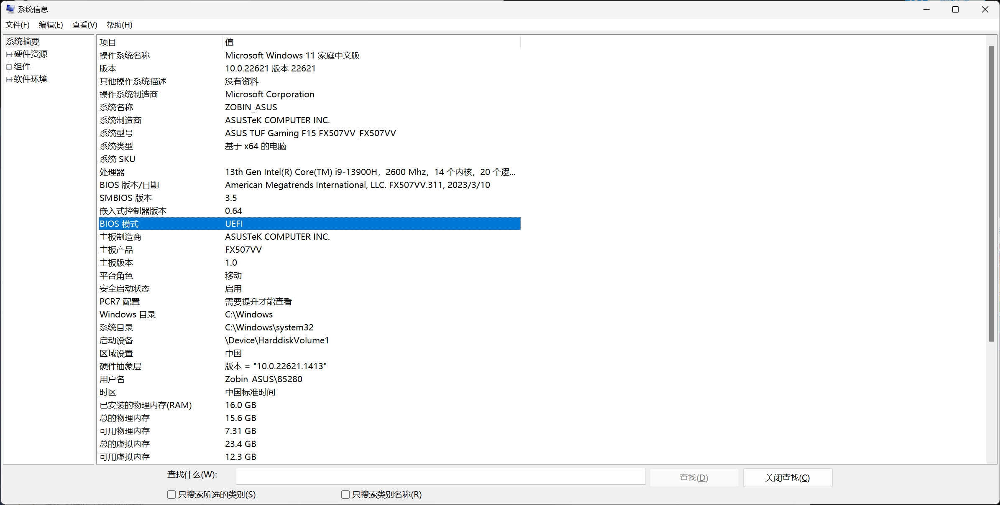
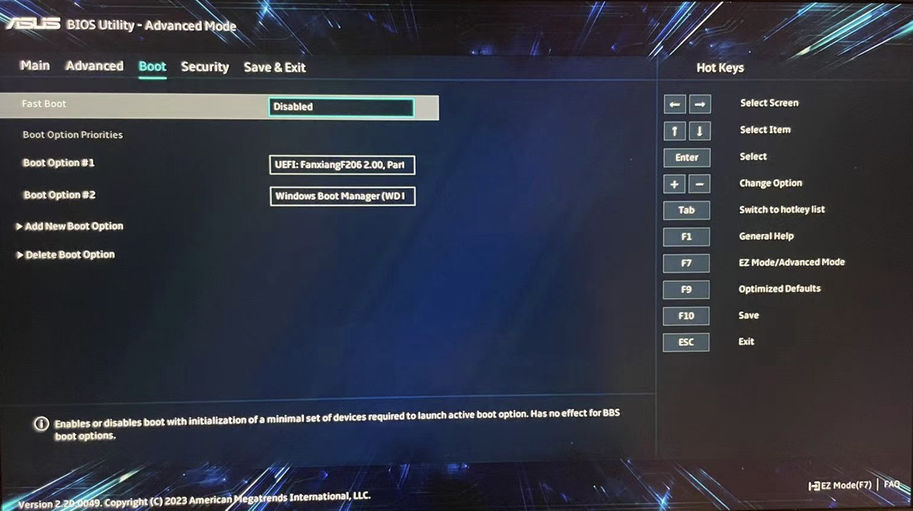
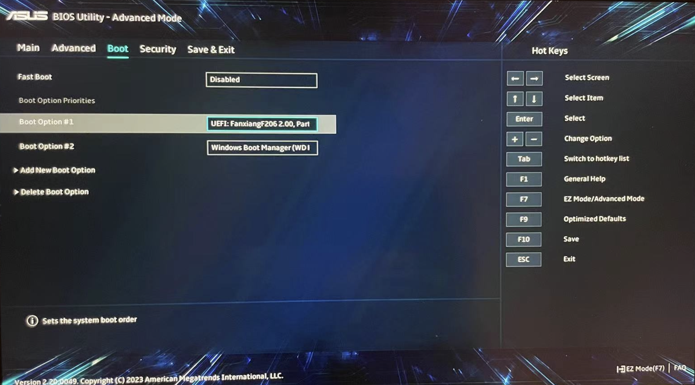
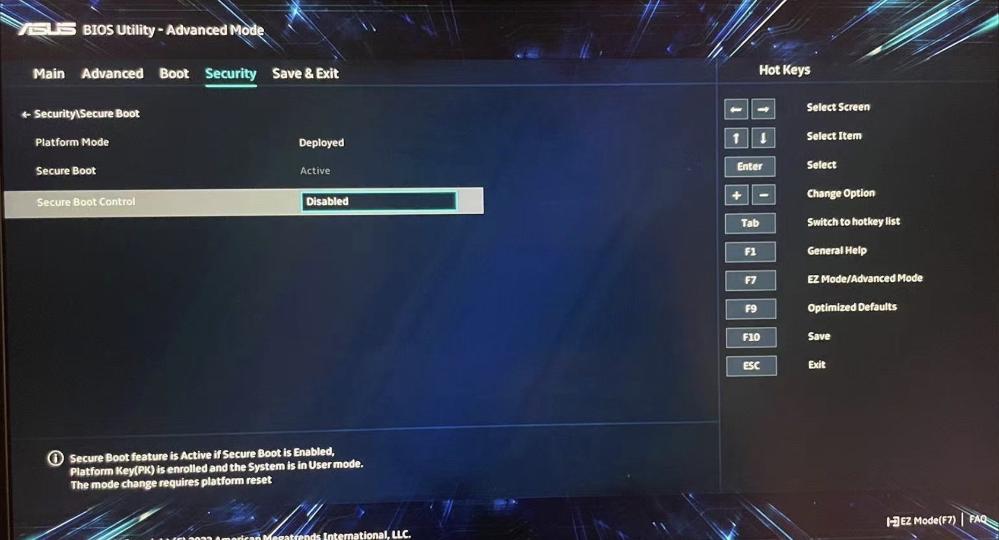

前言
年初购置了一台华硕天选 4 笔记本，后续计划用于硬件开发用途，硬件开发的软件部分只能运行在 Windows 系统上 (e.g., Altium Designer)，部分软件推荐运行在 Linux 系统上 (e.g., Vivado, 硬件仿真程序)，因此计划给电脑安装双系统，本文记录了这个过程，方便后续进行查阅复刻。
本文所使用的电脑的硬件配置，以及目标软件配置如下：
| 硬件类型 | 配置 |
|---|---|
| CPU | i9-13900H |
| 内存 | 16GB |
| 硬盘 | NVMe WD PC SN560 (953.85GB) |
| 显卡 |
|
| 软件 | 配置 |
|---|---|
| BIOS 模式 | UEFI |
| 目标 Windows 系统 | Windows 10 专业版 |
| 目标 Ubuntu 系统 | Ubuntu 22.04 |
本文只针对 BIOS Mode 为 UEFI 的电脑生效。
在 Windows 系统下查看 BIOS 模式，可以按下 win + r，然后输入 msinfo32 进行查看。

下面我们先对 Windows 系统进行安装，然后再安装 Ubuntu 系统。
Windows 系统安装
制作安装盘
首先准备一个容量大概是 16GB 的 U 盘，按照官方文档 ms_win10，制作好一个安装 U 盘，此处不做赘述。
设置 BIOS
重新启动电脑，按住 F2 进入 BIOS，然后分别进行以下设置:
将 Fast Boot 设置为 Disabled 状态

将 Boot Option #1 设置为 U 盘设备

将 Security Boot Control 设置为 Disabled 状态

完成以上设置后，可以按下 F10 保存 BIOS 配置并重新启动电脑。
设置 BIOS